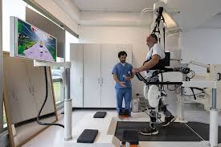

In our generation, years by years technology change. Healthcare workers finds easieast and fastest way to take care patients.
This electronics are computers, telehealth, and health apps. The patients now is able to track their lab results, can talk to doctors, nurses and any needed healthcare workers using only their phones and other gadgets.
This helps patients to feel that they are with the healthcare team and still feel the care. These tools are also use for patient for better understanding and what care to provide even more. This care using informatics, the care is more personal and effective for patients and workers.

MEDICINE MAKING
Technology becomes part of making medicines. This helps in making medicines right and right doses so that it is safe and correct medicine for patient
SURGERIES WITH TECHNOLOGY
In surgeries, doctors used machines like robotics arms and lasers to be able to do the procedures effectively.
These help them to see inside the body
MEDICAL PROCEDURES
Healthcare workers also used technology to do test's (xray, MRI, and ultrasound)
CARE TOOLS
They are using machines, ventilators, health monitors to support the life of the patients
The healthcare workers can able to see in the monitor if the patients needs more care
CITATIONS
AMERICAN NURSES ASSOCIATION. (N.D.).NURSING INFORMATICS.